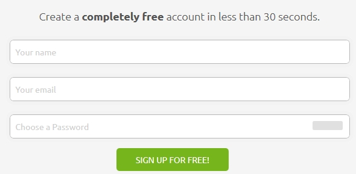
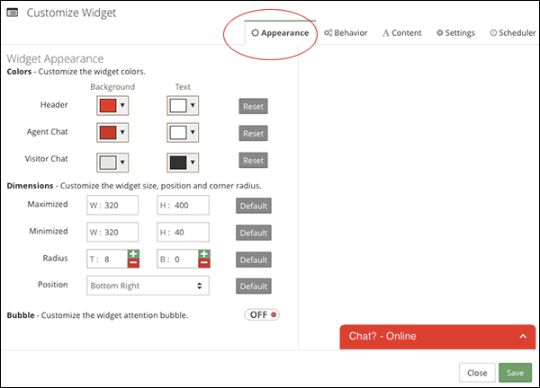

Use Facebook Messenger
Giải pháp Live Chat hỗ trợ trực tuyến miễn phí
Bạn đang tìm một giải pháp hỗ trợ khách hàng trực tuyến ? Bạn có nhiều khách hàng truy cập Website nhưng tỷ lệ khách hàng mua hàng lại thấp, bạn muốn tăng tỷ lệ chuyển đổi khách hàng trên Website. Tích hợp ngay giải pháp hỗ trợ trực tuyến (hay còn gọi là live chat) là việc bạn cần làm ngay trên Website của mình.
Phần mềm (chương trình) chat trực tuyến là phần mềm hỗ trợ người quản trị website tương tác với người xem một cách trực tiếp mà không yêu cầu người dùng cài thêm phần mềm nào (khác với skype và yahoo), tất cả đều được trao đổi ngay trên cửa sổ trình duyệt.
Lợi ích của phần mềm này thì không phải bàn cãi đối với các website bán hàng lẫn website giới thiệu công ty, bạn có thể biết được người xem đang theo dõi trang nào trên website của bạn, chủ động mời chat, tư vấn trực tiếp cho người xem trong khi họ vẫn đang theo dõi các thông tin trên website, rất tiện lợi và hiệu quả và đặc biệt là không cần cài thêm bất kỳ phần mềm nào lên máy tính người dùng.
Một số bạn vẫn quyền sử dụng các cộng cụ Live Chat trước đây như Zopim, Vchat, Subiz … những giải pháp này đều rất hay nhưng nó có mức phí khá đắt. Ví dụ như Subiz mình đã từng mua cho khách hàng, họ có 2 nhân viên trực live chat thì tổng chi phí họ phải trả mỗi tháng là gần 500k. Mức phí này sẽ không cao với một doanh nghiệp, nhưng nếu có giải pháp miễn phí mà chức năng tương đương thì chuyển qua đó cũng không phải tệ.
Tawk.to
Tú giới thiệu tới các bạn Tawk, một giải pháp hỗ trợ trực tuyến hoàn toàn miễn phí và đẩy đủ mọi tính năng không thua kém bất kỳ một bản trả phí nào khác trên thị trường. Những ứng dụng khác làm được gì thì nó đều làm được tương tự và hỗ trợ cả tiếng việt.
Một số tính năng đặc biệt mà Tawk hỗ trợ cho bạn:
- Hỗ trợ tiếng việt
- Hoàn toàn miễn phí
- Hỗ trợ cấu hình, thay đổi khung chat (VD Thêm trường số điện thoại, thêm 1 trường bất kỳ bạn muốn)
- Cho phép tự thay đổi, thiết kế hộp chat.
- Tạo ra các trigger thông min (VD: tự động bắt chuyện, trả lời khách hàng)
- Tích hợp nhiều Website cùng lúc trong 01 tài khoản. (Tú thích nó, bởi Tú quản lý cho nhiều khách hàng khác nhau)
- Nhận nội dung chat, tin nhắn qua email.
- Lưu lại thông tin khách hàng
- Banned IP – với IP động như ở Việt Nam, cái này hơi thừa.
- Xem được nội dung chat của khách hàng trước khi họ gửi. (Cái này cực hay)
Một điểm mình rất hài lòng với Tawk là tốc độ khi sử dụng ở Việt Nam rất ổn định. Bạn đầu mình khá lo lắng vì máy chủ họ đặt ở nước ngoài, nhưng sau khi sử dụng thì hoàn toàn hài lòng, thậm chí khi trải nghiệm so sánh với Vchat thì mình thấy tốc độ cải thiện hơn.
Theo đánh giá Tawk không phải là phần mềm hoàn hảo nhất nhưng lại là phần mềm cân bằng nhất giữa các yếu tố: hiệu quả, nhanh chóng và tiết kiệm.
Thứ nhất về hiệu quả: nó mang đầy đủ các yếu tố củ các phần mềm khác ví dụ: có thể tạo nhiều agent (người trực), apartment (phòng ban), tạo trigger (trả lời tự động), tùy chỉnh widget (khung chat)... chi tiết các chức năng có thể xem ở đây:https://www.tawk.to/features/.
Về tính nhanh chóng: Tawk có app riêng cho 2 hệ điều hành thông dụng nhất là Android và iOS, bạn có thể nhận được tin nhắn từ khách hàng ngay trên các thiết bị di động của mình và tương tác với họ ngay lập tức mà không cần mở máy tính lên.
Tiết kiệm: một yếu tố mà SGP đánh giá rất cao (chắc chắn là bạn cũng vậy) đối với tawk đó chính là nó hoàn toàn miễn phí. Trong khi các phần mềm chat khác, nó tính phí đối với từng agent, hoặc tài khoản miễn phí thì cũng giới hạn rất nhiều (vd 50 cuộc chat/tháng đối với subiz) thì đối với Tawk bạn có thể tạo không giới hạn agent, apartment, điều chỉnh mọi chức năng của nó mà không phải trả bất kỳ chi phí nào. Bạn lo lắng đây chỉ là demo, sau này có thể sẽ thu phí, đừng lo, SGP đã có hỏi support bên phía tawk thì họ phản hồi rằng Tawk kinh doanh theo một hướng khác chứ không thu phí như các phần mềm chat khác, nên bạn cứ an tâm nhé.
Cách đăng ký và cài đặt
Việc đăng ký và cài đặt Tawk cũng khá đơn giản, bạn chỉ cần vào website www.tawk.to và đăng ký cho mình một tài khoản.

Sau đó làm theo các bước để bắt đầu sử dụng.
Bước 1: Cài đặt thông tin website
Bước 2: Mời thêm người trực (Agent) nếu cần
Bước 3: Thêm một đoạn code vào ngay trong phần body của website của bạn (ở tất cả các trang)
Tích hợp vào website
Sau khi đăng ký tài khoản, bạn sẽ được cung cấp một đoạn mã, bạn phải tích hợp đoạn mã này vào website của mình để chạy chương trình.

Sau khi tích hợp vào website, bạn sẽ có một ô chat nằm ở góc trang web.
Vậy là bạn đã tích hợp thành công vào website. Người dùng sẽ nhấn vào nút chat trực tuyến trên và tương tác với bạn.
Chat
Để theo dõi và tiếp nhận các yêu cầu chat, có 2 cách:
- Truy cập vào đường dẫn: https://dashboard.tawk.to và đăng nhập tài khoản của bạn.
- Tải phần mềm Tawk lên smartphone, hiện tại Tawk hỗ trợ hệ điều hành Android và iOS, bạn có thể lên kho app trực tuyến của 2 hệ điều hành này để tìm.
Sau khi đăng nhập vào đường dẫn Dashboard bạn sẽ có giao diện như sau.
Sau khi tạo tài khoản và active thành công. Truy cập vào https://dashboard.tawk.to/login đăng nhập để vào phần quản trị của Tawk.to
Ở cột bên trái sẽ hiển thị các người dùng đang online trên website của bạn, bạn có thể chủ động mời họ chat. Bên phải là các con số thống kê, lịch sử các cuộc chat.
Một cuộc trò chuyện (chat) sẽ có giao diện như sau:
Khi cần tham gia cuộc trò chuyện thì bạn nhấn Join để bắt đầu.
Bạn có thể nhấn vào nút option ở góc để xem thông tin người đang chat hoặc ghi chú thông tin để tiện theo dõi về sau.
Tùy chỉnh
Ở các menu tiếp theo bao gồm:
Chats: các cuộc trò chuyện đang trực tuyến.
History: lịch sử các cuộc trò chuyện.
Shortcuts: tạo và quản lý các phím từ khóa.
Site & Pages: quản lý chung.
Sercurity: bảo mật, ban nick...
Quản lý Shortcuts
Ở chức năng Shortcuts, bạn có thể tạo các từ khóa ngắn để tăng tốc độ tư vấn, ví dụ mình tạo một shortcuts như sau:
Thì ở ô chat, khi nhấn phím "/" mình sẽ có gợi ý:
Bạn sẽ không phải mất nhiều thời gian để đánh cùng một nội dung cho từng khách hàng nữa.
Quản lý Site
Ở đây mình chỉ nói về phần Site, phần Page là một chức năng khác của Tawk, dùng để chạy Tawk độc lập, mình sẽ không đề cập.
Bạn có thể tạo nhiều Site trong một tài khoản Tawk, một site tương ứng với một mã code khác nhau để gắn vào các website khác nhau, nghĩa là bạn chỉ cần đăng nhập một lần là có thể trực trên nhiều website khác nhau.
Một Site sẽ có các tùy chỉnh sau:
Widget là phần quản lý box chat sẽ hiển thị trên website của bạn, bạn cũng có thể lấy lại đoạn mã tích hợp ở đây nếu quên.
Nhấn Modify để quản lý, trong này bạn có thể tùy chỉnh kích thước, màu sắc, các câu chữ hiển thị trên box chat. Phần này cũng khá trực quan, các bạn có thể tự tìm hiểu để tạo cho mình một box chat thật ấn tượng.
Tiếp theo là phần quản lý Agents, agent sẽ là người trực ô chat giống như bạn vậy, bạn có thể mời (Invite) thêm người cùng vào trực hoặc quản lý tài khoản Tawk cùng bạn.
Departments là phần quản lý phòng ban, bạn có thể tạo nhiều phòng ban, gán các Agent có trách nhiệm vào phòng ban tương ứng. Ở phần quản lý Widget bạn có thể yêu cầu người dùng chọn phòng ban trước khi bắt đầu cuộc nói chuyện.
Triggers là một công cụ khá thú vị, nếu bạn không có nhiều thời gian để ngồi trực và chào người dùng khi họ truy cập website, bạn có thể dùng công cụ này để chào một cách tự động. Ví dụ bạn có thể cài đặt sau 20s người dùng ghé thăm website thì hệ thống sẽ tự hỏi "xin chào, tôi có thể hỗ trợ cho bạn không?".
Phần setting thì tốt nhất không cần đụng tới.
Một số tùy chỉnh khác
Bật thông báo của trình duyệt: khi bạn bật chức năng này thì khi có người vào website hoặc có người chat, trình duyệt sẽ hiện một thông báo để nhắc nhở bạn, bạn chỉ việc mở dashboard trong 1 tab trình duyệt và làm việc khác.
Thay đổi tên và avatar hiển thị trên ô chat: bạn vào mục Aliases, một tài khoản bạn có thể tạo nhiều tên và avatar hiển thị khác nhau và chọn một cái phù hợp khi tham gia một cuộc nói chuyện.
Chỉnh thời gian hiển thị ô chat: khi sử dụng App trên điện thoại, bạn sẽ luôn ở trong trạng thái trực tuyến (bạn có thể offline bằng tay), nếu bạn muốn set thời gian để ô chat offline tự động (ví dụ khi bạn ngủ) thì bạn vào quản lý Widget, ở tab cuối cùng có mục "Scheduler", hãy set các thời gian mà ô chat sẽ hiển thị hoặc ẩn đi một cách tự động.
Trên đây là một số hướng dẫn cơ bản để sử dụng, còn việc sử dụng sao cho hiệu quả thì phải phụ thuộc vào bạn rồi. Chúc bạn tìm được nhiều khách hàng thông qua công cụ thú vị này.
Customize the Chat Widget
https://www.tawk.to/knowledgebase/chat-widget/customize-the-chat-widget/
Để thay đổi cách hiển thị Visitor Widget trên website của bạn. Thực hiện các bước sau:
Đi tới Sites & Pages nằm phía trên của màn hình hiển thị.
Click vào Manage Sites để chỉnh sửa Widget cho website của bạn.
Trong cột Widgets chọn Website bạn muốn chỉnh sửa rồi click vào Manage.
Click Modify trong cột Settings
Click tới Tab Appearance. Chỉnh sửa các cài đặt cho phù hợp với website của bạn. Sau đó bấm nút Save để hoàn tất chỉnh sửa.
Change How the Widget Behaves on Your Site
Link: https://www.tawk.to/knowledgebase/chat-widget/change-how-the-widget-behaves-on-your-site/
Để thay đổi Visitor Widget Behaves hiển thị trên website của bạn, Thực hiện theo các bước sau:
Đi tới Sites & Pages nằm ở thanh menu phía trên của Dashboard
Click vào Manage Sites.
Trong Cột Widgets click Manage
Click Modify ở trong cột Settings.
Click vào Tab Behavior.
Những thay đổi bạn làm ở màn hình Widget Behaves. Sẽ thay đổi các hiệu ứng hiện ra trên website của bạn:.
Các tùy chọn bao gồm:
Hide estimated wait time / Ẩn ước tính thời gian chờ đợi
Disable sound notification / Vô hiệu hoá thông báo âm thanh
Hide the widget when offline / Ẩn widget khi offline
Hide the widget on load / Ẩn widget trên tải
Hide the widget on mobile devices / Ẩn widget trên thiết bị di động.
Modify the Greetings for the Widget
https://www.tawk.to/knowledgebase/chat-widget/modify-the-greetings-for-the-widget/
Click vào Tab Content.
Bạn có thể cài đặt thay đổi Language và lời chào hiển thị khi có người dùng ghé thăm website của bạn. Công việc sửa đổi lời chào hiển thị rất đơn giản, bạn chỉ việc click vào icon bút chì nhỏ. Click Save button khi bạn đã hoàn thành việc sửa đổi.
Enabling the Bubble Message
https://www.tawk.to/knowledgebase/chat-widget/enabling-the-bubble-message/
Trong Tab Appearance kéo xuống cho tới khi nào bạn thấy Bubble on/off. Bật On bằng cách click vào nó. Bạn sẽ thấy options cho Bubble Message.
Lựa chọn màu sắc mà bạn mong muốn cho Bubble Message. Nhập đoạn Text bạn muốn hiển thị. click Save để hoàn tất những thay đổi.
Bạn có thể chỉnh sửa lời mời gọi Chat, Sử dụng hình ảnh kêu gọi từ kho dữ liệu của tawk.to bằng việc click vào “SELECT FROM GALLERY” hoặc upload image hình ảnh mà bạn tự thiết kế để làm lời mời gọi chat.
Using the Pre-Chat Form
https://www.tawk.to/knowledgebase/chat-widget/using-the-pre-chat-form/
Click vào Tab Content. Bạn có thể chọn Pre-Chat Form từ menu xổ xuống dưới tùy menu tùy chọn ngôn ngữ. Bạn có thể Mở hoặc Tắt Pre-Chat Form sau khi chọn Pre-Chat Form. Bật Pre-Chat Form bằng cách click “Công tắc” từ trạng thái OFF sang ON.
Sau khi công tắc bật On, bạn có thể tùy chọn các thông tin muốn người dùng nhập trước khi bước vào cuộc trò truyện.
Bạn có thể chọn nội dung bắt buộc khách hàng phải điển bằng cách click vào biểu tượng dấu * màu xám ở bên phải mỗi trường.
Bạn có thể chỉnh sửa các đoạn text bằng cách click vào biểu tượng cây bút chì bên cạnh mỗi dòng text.
Using the Widget Scheduler Feature
https://www.tawk.to/knowledgebase/chat-widget/using-the-widget-scheduler-feature/
Click vào Tab Scheduler.
Chọn thành phố mà bạn hoạt động. Tiếp đó tùy chọn khung thời gian mong muốn. Click Save để hoàn tất các chỉnh sửa.